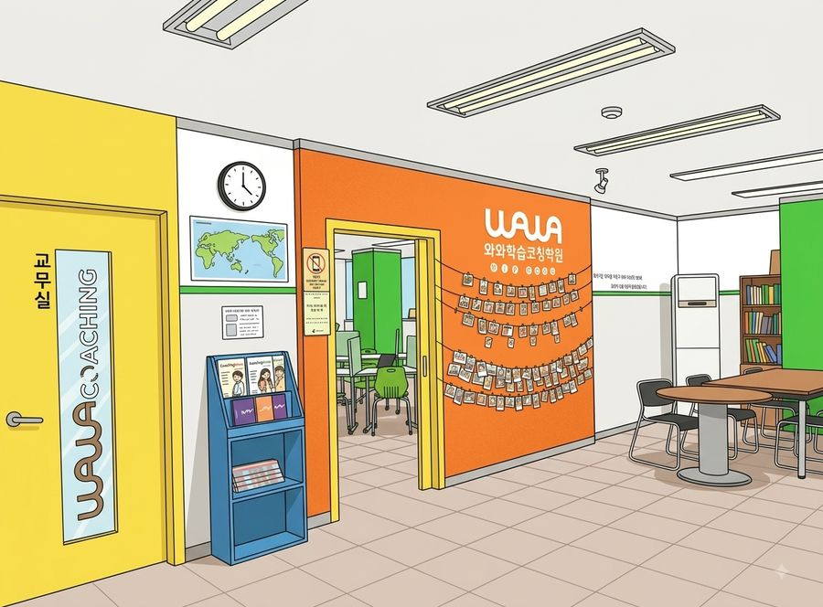

학생마다 자기 진도로 공부합니다.
지점 안내
| 주소 | 대구 중구 서성로 99 대구역센트럴자이 상가 302호 와와학습코칭학원 수창공원 맞은편 1층 몬스터커피에서 왼쪽 건물 3층 |
|---|---|
| 주변 | 대구역센트럴자이 상가 |
| 수업 과목 | 국어초1~고3영어초1~고3수학초1~고3과학초1~고3사회초1~고3 |
| 수업 시간 | 평일 오후 1시 이후 · 주말불가 상담 예약제 · 셔틀버스 없음 · 수업비는 아래 수강료 안내 참고 |
오시는 길
수업은 이렇게 다릅니다
와와학습학원의 수업은 과목 수업입니다. 국어, 영어, 수학, 과학, 사회 각 과목을 그 과목 선생님이 가르치고, 여기에 공부 방법과 공부 습관을 잡아 주는 코칭이 더해집니다. 자기주도학습을 한다고 해서 학생을 혼자 두는 방식이 아닙니다.
칠판 앞에서 판서하며 진도를 일괄로 나가는 강의식 수업이 아닙니다. 수업 시간의 대부분은 학생이 직접 푸는 시간이고, 선생님은 옆에서 확인하다가 막히는 곳을 개별로 설명합니다. 그래서 반 개강일이나 고정된 클래스 횟수가 없습니다. 교재와 커리큘럼은 진단 결과에 따라 학생마다 다르게 잡히고, 그래서 학기 중이든 방학이든 언제든 시작할 수 있습니다.
- 소수 인원으로 각자 자기 진도를 나가고, 선생님이 개별로 확인합니다.
- 계획 짜기, 오답 정리, 그날 분량 확인도 선생님이 같이 챙깁니다.
- 시험 3~4주 전부터는 다니는 학교 기준의 내신 대비로 수업이 바뀝니다.
- 기초부터 시작하는 수업도, 상담을 거친 심화·연계학습도 가능합니다.
- 개설 과목과 운영 방식은 지점마다 조금씩 달라 상담에서 확인하는 것이 정확합니다.
초등부
초등 고학년은 중학교 내신의 기초를 만드는 시기입니다. 연산, 어휘 같은 기본기를 학기마다 점검하고, 부족하면 학년을 거슬러 올라가 메웁니다. 하루 학습량을 기록하게 해서 공부 습관을 만드는 데 비중을 둡니다.
중등부
중학교부터는 지필고사와 수행평가가 성적을 만듭니다. 시험 4주 전에 과목별 대비 일정표를 만들고, 수행평가 제출물도 학원에서 챙깁니다. 자유학기제 학년은 고교 내신을 내다본 연계학습과 기본기 보강에 씁니다.
고등부
고등부는 시험 범위가 넓고 진도가 빨라서 평소 진도 관리가 그대로 내신 대비가 됩니다. 주 단위로 학습량을 점검하고, 모의고사 성적과 내신 등급을 같이 놓고 수시와 정시 중 어느 쪽에 비중을 둘지 상담에서 잡아 드립니다.
과목별 수업 안내
과목을 선택하면 수창동 기준의 수업 방식과 내신 대비 흐름을 자세히 볼 수 있습니다.
관리 학교
대구역점에 다니는 학생들의 소속 학교입니다. 학교별 시험 대비 안내는 학교 이름을 눌러 확인하세요. 목록에 없는 인근 학교 학생도 수업이 가능하니 상담에서 확인해 주세요.
영상으로 보는 와와

자주 묻는 질문
강의식 수업인가요?
아닙니다. 칠판 앞에서 설명하고 받아 적는 수업은 하지 않습니다. 학생마다 진단으로 정한 자기 진도를 직접 풀고, 선생님이 옆에서 보다가 막히는 곳을 설명해 줍니다. 공부 방법과 습관도 같이 잡아 주기 때문에 혼자 앉혀 놓는 자습과는 다릅니다.
상담은 어떻게 신청하나요?
화면의 전화 상담 버튼 또는 상담 신청 페이지로 접수하시면 됩니다. 상담은 예약제로 진행되어, 접수 후 지점에서 시간을 잡아 연락드립니다.
수업료는 어떻게 되나요?
학년과 주당 횟수에 따라 다릅니다. 대구역점 기준 금액은 수강료 안내 표에 있고, 자세한 시간과 횟수는 상담에서 조율합니다.
중간에 등록해도 진도를 따라갈 수 있나요?
개별 진도로 수업하기 때문에 학기 중 등록이 불리하지 않습니다. 첫 주에 진단을 거쳐 학생의 현재 위치에서 시작합니다.